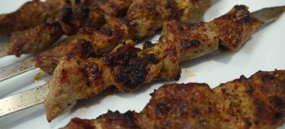

How make Kabab
Ingredients
- 3 tablespoons lemon juice
- 4 cloves garlic, peeled and crushed
- 1/2 cup live, natural yogurt (optional)
- Salt and black or red pepper
- 1 teaspoon ground cilantro seed (optional)
- 2 pounds boneless lamb, cut into 3/4 inch cubes
- 8 ounces lamb fat (optional) or 2 tablespoons vegetable oil
- 2 lawausha or chapati (or nan)
